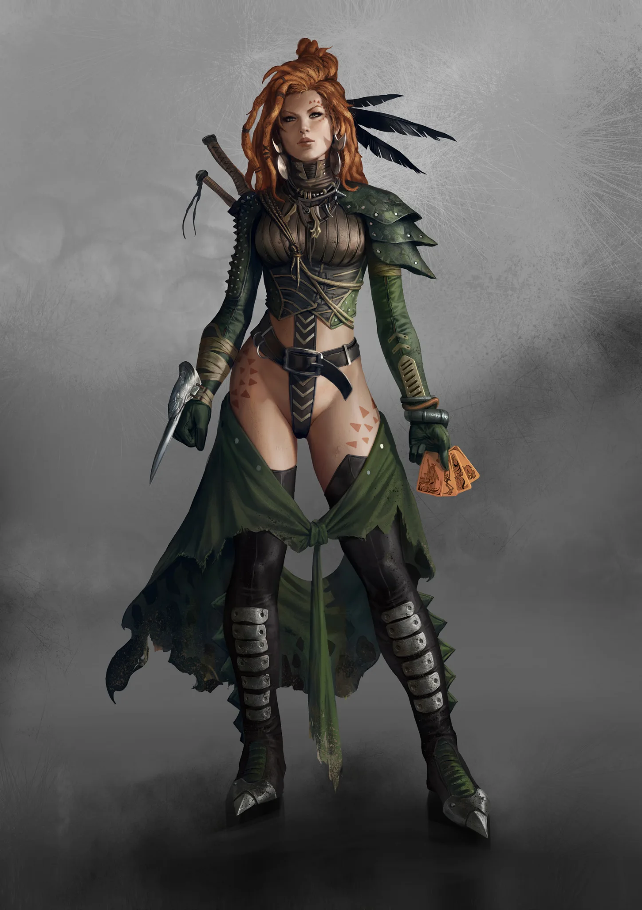

Leaders
- Mother of Ravens
- Ravens
- Callisto
- Cardial
- Dejan
- Ghostfeather
- Sacrocant
- Albatrosses
- Meridian
- Vulco
- Buzzards
- Sabata
CULT DOSSIER
Lords of Desire
+1 to maximum skill level

THE CULT
The Apocalyptics live as if tomorrow is an insult. Pleasure, fear, pain, lust, violence, intoxication, triumph, and humiliation are experiences to be seized while they are still possible. They do not promise salvation, civilization, or a better age. They promise that life can still be felt.
That appetite makes them entertainers, smugglers, prostitutes, thieves, assassins, raiders, pirates, dealers, and gamblers. Wherever people have money and desires they cannot satisfy openly, an Apocalyptic can usually find a business. Vice is opportunity, leverage, and often the foundation of a Flock's survival.
Few modern Apocalyptics care where the Cult truly began. Its oldest roots have vanished beneath centuries of migration, violence, vice, and reinvention. History belongs to scholars and old men; the Flocks concern themselves with what still works.
During the chaos following the Eshaton, Apocalyptics survived because they understood that desire outlives civilization. Food, weapons, drugs, sex, protection, and forbidden pleasures remained valuable even when governments collapsed. Flocks moved through the ruins, cultivated black markets, bribed those who could be bought, blackmailed those who could not, and killed when neither was enough.
As new powers imposed order, the Apocalyptics adapted again. Judges, Voivodes, Hellvetics, Spitalians, and countless local rulers changed the boundaries of their world, but none eliminated the appetites upon which the Flocks thrived. That history survives less as doctrine than instinct: laws change, kingdoms fall, and fortunes disappear, but people always want something.
Every emotion has value to an Apocalyptic. Love is worth feeling because it may vanish. Hatred deserves expression before it cools. Violence, sex, speed, intoxication, risk, and beauty are pursued to their limits because restraint belongs to people who expect the future to reward them.
Apocalyptics still plan when survival or profit demands it, running smuggling networks, brothels, markets, ships, and criminal enterprises. They simply reject the idea that tomorrow is more important than today.
Youth and vitality are prized for the same reason. Age is treated as decay and weakness, although elders who remain dangerous or well connected can still command respect.
The Flock is the true Apocalyptic family. Blood matters less than loyalty, usefulness, and the place someone earns among their siblings. Flocks may migrate across wastelands, dominate a district for years, operate ships along the Mediterranean, or build permanent nests inside settlements.
Names such as the Carrion Birds, Dust Riders, or East Wind belong to the entire Flock. Individuals take bird names according to the roles they earn: Battle Crow, Magpie, Owl, Cuckoo, Woodpecker, and many others.
Status is never entirely secure. Challenges, brawls, humiliation, and contests establish the pecking order. A leader who displays weakness can be challenged, while betrayal of the Flock is among the few acts almost universally unforgivable. Apocalyptics may cheat everyone else, but stealing from the nest can leave even a successful criminal with broken wings.
Ravens lead European Flocks through a mixture of authority, cunning, intimidation, and interpretation of the Apocalyptic Tarot. The cards contain archetypes drawn from the world around them: Cults, Psychonauts, the Primer, Clans, old powers, and new threats. No two decks must be identical, and symbols change as the world changes.
A Raven's reading is less a passive glimpse of fate than a tool for decision. Cards can decide routes, champions, shipments, or how an enemy should be handled. Whether the Tarot truly predicts anything matters less than the Raven's ability to understand the Flock and turn uncertainty into direction.
Leadership can be challenged. A Raven may refuse a duel, but refusal risks looking like weakness before siblings whose loyalty depends heavily upon respect. Authority among the Apocalyptics is therefore personal and constantly tested.
Migratory Flocks still need places to recover, trade, celebrate, hide, and plan. Woodpeckers establish these nests in abandoned tunnels, forbidden districts, ruined buildings, taverns, brothels, and other places where officials would prefer them not to exist.
A nest may offer gambling, alcohol, sex, entertainment, contraband, stolen goods, or Burn while also serving as a base for raids and smuggling. Judges see criminal infestations; nearby Scrappers and laborers see somewhere to spend their earnings.
Different birds fill different needs. Battle Crows defend the Flock. Magpies turn desire and theft into profit. Owls kill or rob from ambush. Cuckoos infiltrate other societies behind false identities. Vultures exploit ruins and weakness. Storks acquire children for the Flock or its enterprises. Woodpeckers secure territory and resources. The Raven keeps the whole dangerous collection flying in roughly the same direction.
Burn is one of the Apocalyptics' most profitable and dangerous businesses. Flocks move cusps from harvesting grounds through secret routes and distribute them to fighters, laborers, Scrappers, Clanners, and anyone willing to accept the risks of infestation.
For decades, the East Wind Flock dominated much of the Borcan trade from Justitian. Its network stretched across Europe until Spitalians, supported by Judges and Anabaptists, destroyed its leadership during the Great Cleanse. The trade diminished but never disappeared.
The Carrion Birds and Dust Riders publicly distanced themselves from Burn afterward, yet dealing continued discreetly. Large Burn markets still appear beyond firm authority, and EX moves through the same shadow economy for customers who prefer not to explain repeated treatment to Spitalian doctors.
Burn brings profit, influence, and customers, but it also ensures permanent hostility with those who see the drug as another path by which the Sepsis spreads.
Apocalyptic culture changes as the Flocks cross borders. Mediterranean Flocks use names suited to the sea: Terns begin at the bottom, Seagulls raid, Pelicans navigate, and Albatrosses command ships and harbors.
African Apocalyptics likewise use their own birds. Hummingbirds occupy the lowest rung, Marabous profit from weakness, Ibises collect secrets, Tokos establish nests, and Buzzards command large Flocks respected even among Neolibyans and Scourgers.
The names change, but the principle remains the same. Rank describes what an Apocalyptic does and what the Flock believes that person is worth.
Judges are the Apocalyptics' natural enemies wherever law collides with vice, smuggling, theft, and murder. Spitalians threaten the Burn trade and have already demonstrated their willingness to destroy entire Flocks. Anabaptists can coexist with Apocalyptics until Sepsis or Burn brings them into conflict.
Relationships with almost everyone else are transactional. Scrappers make excellent customers, Neolibyans spend freely on luxury, Chroniclers possess valuable information, and Clanners can be rivals one day and allies the next. Even a hostile Cult may hire an Owl when it needs someone dead.
Apocalyptics survive in the spaces between other powers because everyone wants something they are willing to sell.
Apocalyptics celebrate freedom, but life inside a Flock is governed by loyalty, hierarchy, reputation, and the constant need to prove oneself. They reject respectable society while building businesses and territories that depend upon carefully maintained networks. They mock people who sacrifice today for tomorrow, yet Ravens read Tarot precisely because somebody must think about what comes next.
Their greatest strength and contradiction is the Flock itself. An Apocalyptic may lie, steal, seduce, cheat, smuggle, kill, and reinvent themselves without shame, but belonging gives those acts direction. The nest is protection, audience, family, marketplace, and identity.
Outside it, freedom can mean doing whatever you want.
Inside it, freedom lasts only as long as the Flock still wants you there.
THE FLOCK
European, Mediterranean, and African Flocks use different bird names. Select any rank to read its full entry.
EUROPE
MEDITERRANEAN
AFRICA
FORTUNE & INSTINCT
TOOLS OF THE FLOCK
Open or close each equipment group to focus the reference.